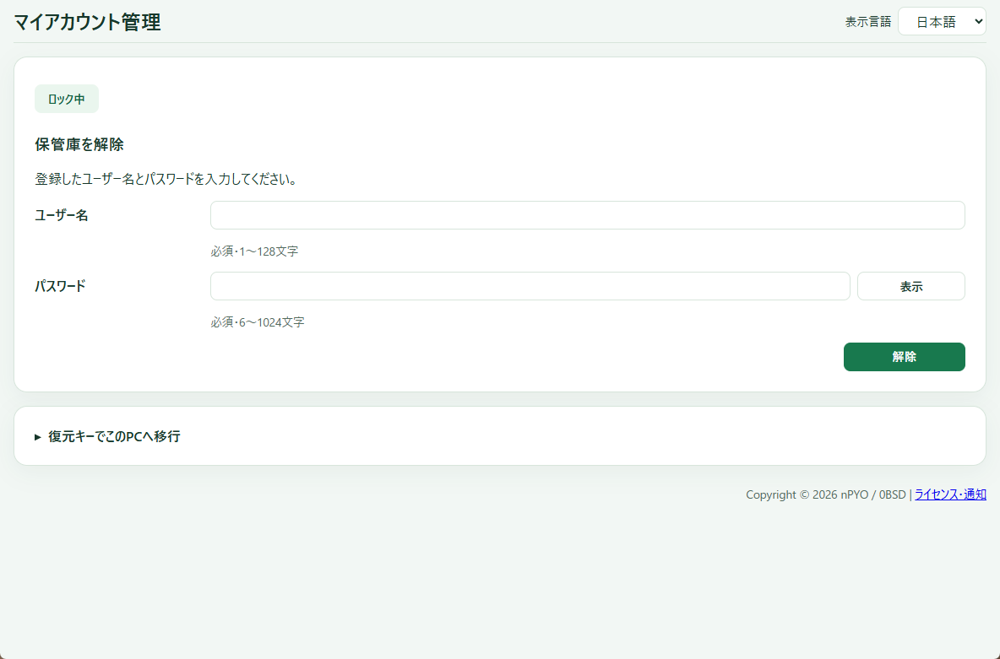
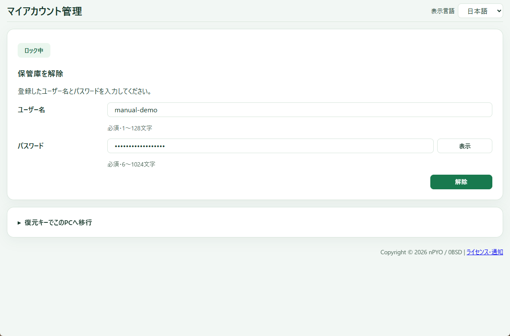

04ロックと解除
席を離れるときは保管庫をロックし、戻ったら登録情報で解除します。
1［ロック］を押す
画面右上の茶色い［ロック］を押します。

2ロック状態を確認
「ロック中」「保管庫を解除」が表示され、一覧が隠れます。

3登録情報を入力
初回登録したユーザー名とパスワードを入力します。

4［解除］を押す
アカウント一覧に戻ったことを確認します。

席を離れるときは保管庫をロックし、戻ったら登録情報で解除します。
画面右上の茶色い［ロック］を押します。
「ロック中」「保管庫を解除」が表示され、一覧が隠れます。

初回登録したユーザー名とパスワードを入力します。

アカウント一覧に戻ったことを確認します。